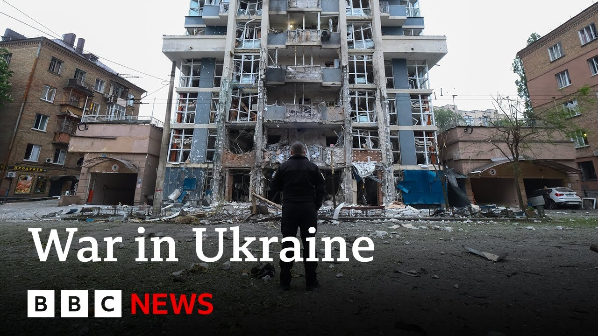

【乌克兰全境发布空袭警报，俄罗斯袭击加剧 | BBC新闻】
Summary: Ukraine faces intensified Russian attacks with nationwide air alerts, heavy missile strikes, and drone incursions, resulting in casualties and heightened tensions amid stalled ceasefire talks.
摘要： 乌克兰遭遇俄罗斯加剧袭击，全国范围空袭警报、猛烈导弹打击和无人机入侵导致人员伤亡，停火谈判陷入僵局，局势紧张。

⏱️ Estimated Reading Time: 6 min
Ukraine's military says Russia has launched another night of heavy missile and drone attacks across the country.
乌克兰军方表示，俄罗斯再次对全国发动了一整夜的猛烈导弹和无人机袭击。
At one point, the whole of Ukraine was under an air alert as missiles were fired from the Black Sea and strategic bombers in Russia.
乌克兰全境一度发布空袭警报，导弹从黑海和俄罗斯境内的战略轰炸机发射。
Officials in the Ukrainian capital said around a dozen enemy drones had reached Kiev's airspace, which forced thousands to take shelter in metro stations and basement.
乌克兰首都官员称，约十余架敌方无人机进入基辅领空，迫使数千人躲进地铁站和地下室避难。
Three people were reportedly killed in Kiev.
据报道，基辅有三人丧生。
Meanwhile, Russia's defense ministry said its air defenses had destroyed almost 100 Ukrainian drones, mostly in central and southern regions, as well as Moscow.
与此同时，俄罗斯国防部称其防空系统击落了近100架乌克兰无人机，主要在中南部地区和莫斯科。
These here are the latest pictures we've just received from Ukraine's capital.
这些是我们刚从乌克兰首都收到的最新画面。
An earlier massive Russian attack on Kiev overnight into Saturday wounded at least 15 people.
周六凌晨俄罗斯对基辅的大规模袭击造成至少15人受伤。
Well, let's go live now to Kiev and our correspondents there, James Waterhouse.
现在让我们连线基辅的记者詹姆斯·沃特豪斯。
And James, what more can you tell us about these overnight attacks on Ukraine?
詹姆斯，关于乌克兰夜间遇袭，你还能提供哪些信息？
Well, they were widespread.
袭击范围很广。
I mean, for for Kev itself, the sirens went off at around midnight.
基辅的警报在午夜左右响起。
Um, I headed down to the shelter here.
我前往了这里的避难所。
Uh, and then a couple of hours later, uh, is when the the explosions could be felt in this central part of the city.
几小时后，市中心能感受到爆炸震动。
You could see drones being intercepted in the skies.
能看到无人机在天空被拦截。
You could hear 50 caliber machine guns shooting upwards to try and take out um some of the dozens of Russian drones that were aimed at this city.
能听到50口径机枪向上射击，试图击落数十架瞄准该市的俄罗斯无人机。
But more broadly, the air force is saying more than 360 drones and missiles were launched last night.
更广泛而言，空军称昨夜俄方发射了超过360架无人机和导弹。
That is the single biggest number yet.
这是迄今为止单日最高纪录。
And what you notice is that the scale of these attacks are only increasing.
值得注意的是，袭击规模仍在扩大。
Ukrainian regions in the west, north, south uh were also uh targeted and President Zalinski has really held back this morning.
乌克兰西部、北部和南部地区也遭袭，而泽连斯基总统今早表现克制。
He has said America's silence uh will only encourage Vladimir Putin to keep doing the same.
他表示美国的沉默只会鼓励普京继续行动。
And what he's referring to are the lack of sanctions, further sanctions being imposed by America as it tries to continue to lead these ongoing ceasefire talk efforts.
他指的是美国未追加制裁，同时试图主导停火谈判。
But you know there is very little hope that there'll be any kind of further cooperation with Russia.
但与俄罗斯进一步合作的可能性微乎其微。
I should say today is the final day of a major prisoner of war exchange.
今天是大规模战俘交换的最后一天。
Um but beyond that I think you know the last 48 hours we had another major strike on Friday night.
但除此之外，过去48小时周五夜间还有一次重大袭击。
The last 48 hours give people here little hope uh that restbite is around the corner.
这让当地人对短期内缓解局势几乎不抱希望。
Indeed.
确实如此。
And President Zalinski has called for truly strong pressure on Russia.
泽连斯基总统呼吁对俄罗斯施加真正强有力的压力。
You say that's unlikely to come from the United States.
你说这不太可能来自美国。
So, what are Ukrainians realistically hoping for at the moment?
那么乌克兰人目前实际期待什么？
Well, they have to they have the impossible job, you uh Ukrainians, of of straddling two positions politically.
乌克兰人面临政治上的两难境地。
They have to say that they are willing for a ceasefire and that they rely on Donald Trump to deliver it because of Ukraine's continued need for uh American military aid.
他们必须表示愿意停火，并依赖特朗普促成，因为乌克兰仍需美国军事援助。
And despite the White House clearly being less sympathetic to Ukraine's cause, uh it is open to the idea of of selling Ukraine arms in the future.
尽管白宫对乌克兰事业明显缺乏同情，但仍对将来售乌武器持开放态度。
And also American aid is continuing to trickle down uh and will continue for some time.
而且美国援助仍在持续，短期内不会停止。
But also Ukraine has to continue to fight Russia to to defend itself to assert its positions in the face of continued Russian demands uh for Ukraine's political capitulation in order for a ceasefire to be agreed.
但乌克兰也必须继续抗击俄罗斯，在俄方要求乌政治投降才能停火的情况下捍卫立场。
So, you're seeing Zalinski be assertive, but also not wanting to cause another falling out with Donald Trump, which he can't afford.
因此泽连斯基既态度强硬，又避免与特朗普再次交恶。
Um, which of course we saw earlier this year.
今年早些时候就发生过这种情况。
And I think this cycle of uh Russia continuing to wage its full-scale invasion.
俄罗斯持续全面入侵的循环。
It's still making advances in the east where you have America running out of patience and threatening to walk away and Russia not changing its position.
俄军在东部推进，美国失去耐心威胁退出，而俄罗斯立场不变。
That just leads to the situation for Ukraine not really changing.
这导致乌克兰的处境难以改变。
Uh, and so you sense it'll take something diplomatically significant, extremely significant to break that pattern.
需要极其重大的外交突破才能打破这种模式。
And James, we've watched the choreography of the prisoner swaps between Russia and Ukraine this weekend.
詹姆斯，我们关注了本周末俄乌战俘交换的安排。
Once they're concluded, what happens next?
结束后下一步是什么？
Well, Ukraine is hoping or certainly America is is that it'll lead to further discussions um that this sole area of cooperation which has been the case throughout this full-scale invasion continues and actually you know Ukrainian and Russian representatives sit down in the future and say look we've exchanged a thousand this week how about we do more and while we're at it why don't we talk about how we're going to arrange a ceasefire which the US desperately wants but at the moment uh it feels like more of a fantasy James, thank you.
乌克兰或美国希望这一全面入侵期间唯一的合作领域能持续，推动未来双方代表讨论扩大交换并协商停火，但目前看来更像幻想。